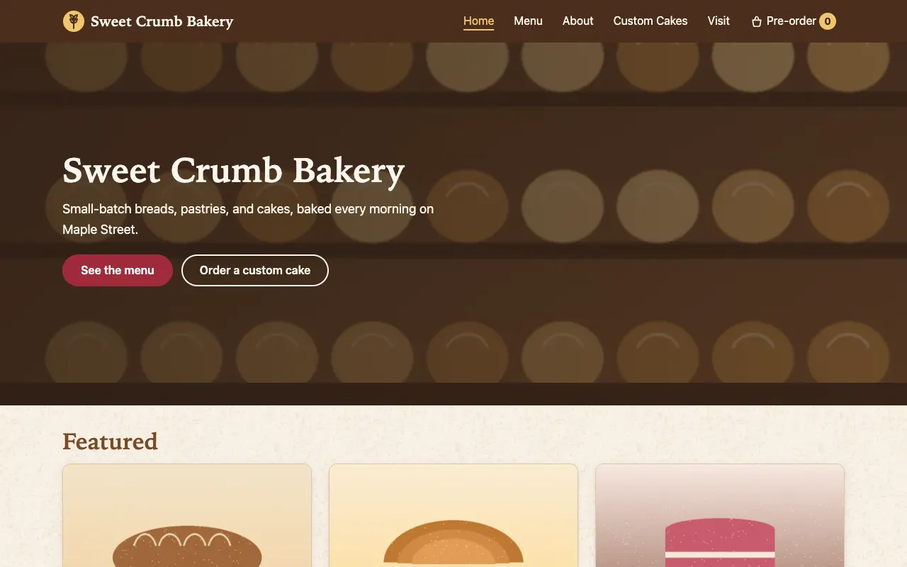
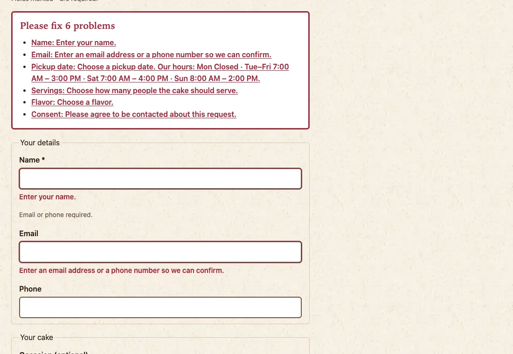
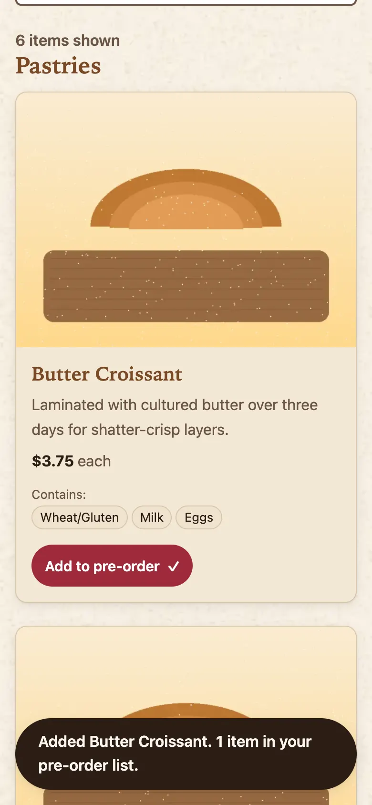
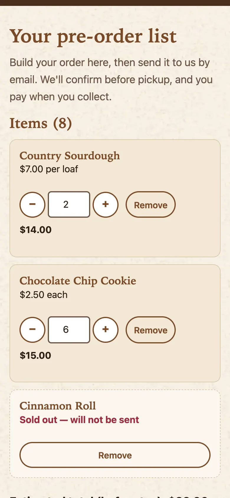

Interview project · Built spec-first with Spec Kit and Claude Code · 3 October 2026
A six-page static website for a neighborhood bakery, taken from a one-paragraph idea to a deployed-ready site through Spec Kit's full workflow. Every prompt was logged automatically, every feature passed a custom QA gate, and every page scores 100 in all four Lighthouse categories.
Part 1
Sweet Crumb is a fictional neighborhood bakery. Customers can browse the menu with filters, search, and allergen labels; see today's specials and whether the bakery is open right now; save a pre-order list and send it by email; and request a custom cake. The owner keeps everything current by editing one JSON file: menu items, prices, sold-out status, specials, opening hours, and announcements.
It is plain HTML, one CSS file, and five vanilla JavaScript modules. There is no framework, no build step, and no backend, and it deploys to GitHub Pages or Netlify as-is.




| Page | What visitors can do | User story |
|---|---|---|
| Menu | Filter by category, search as they type, read allergen badges, see sold-out items, add to pre-order | US1 (P1, MVP) |
data/menu.json | Owner edits one file; a plain-language guide sits next to it | US2 (P2) |
| Home & Visit | Hero, featured items, today's specials, weekly hours with "Open now / Closed now", address, map, directions | US3 (P3) |
| Pre-order | Adjust quantities (1–99), see an estimated total, pick a pickup slot, send a pre-filled email | US4 (P4) |
| Custom Cakes | Validated request form; sends through a form service or falls back to email | US5 (P5) |
| About | The bakery's story and team | US6 (P6) |
Each page loads exactly one JavaScript module. Imports only go one way, so there are no circular dependencies:
site.js form.js cart.js menu.js filters.js
site.js imports nothing. It loads and normalizes the menu, handles the bakery's time zone, prices in integer cents, and the header count on every page.
America/New_York, so a visitor in Tokyo sees the right answer.menu.json shows "Our menu is being updated. Please call us." Blocked browser storage keeps the list in memory with a notice.Part 2
The project followed Spec Kit's spec-driven workflow in order. Each step produced a document the next step read, and the implementation was checked against them.
| Order | Command | What it produced | Highlights |
|---|---|---|---|
| 1 | /speckit-constitution | .specify/memory/constitution.md (v1.0.0, later v1.0.1) | 6 principles: pure static output, content-driven menu, WCAG 2.1 AA, Lighthouse ≥ 90, mobile-first, and a non-negotiable QA gate |
| 2 | /speckit-specify | spec.md + quality checklist | 6 prioritized user stories, 37 functional requirements, 9 measurable success criteria, 11 edge cases; checklist 16/16 |
| 3 | /speckit-clarify | Clarifications in spec.md | 5 questions, one at a time (answers below) |
| 4 | /speckit-plan | plan.md, research.md (16 decisions), data-model.md, 4 contracts, quickstart.md | Constitution check passed before and after design |
| 5 | /speckit-tasks | tasks.md | 63 tasks in 9 phases, organized by user story; 18 parallelizable |
| 6 | /speckit-analyze ×2 | Consistency reports (read-only) | Run 1: 14 findings (0 critical, 2 high). Run 2: 4 findings. All fixed before implementation |
| 7 | /speckit-implement | site/, qa/, deploy workflow | 61 of 63 tasks done; 2 need a person (screen reader, other browsers) |
| 8 | specify extension add --dev | Installed the bakery-qa extension | Registered 2 commands and 2 lifecycle hooks |
| 9 | /speckit-bakery-qa-menu-check /speckit-bakery-qa-site-audit | QA reports | Both passed (Part 5) |
| Question | Answer |
|---|---|
| Where do hours and contact details live? | In menu.json, next to the menu (one file to edit) |
| Can an item have several sizes or prices? | No: one price plus an optional unit label |
| Can cake requests attach inspiration photos? | No: describe the design in text |
| Is the pre-order list a page or a panel? | Its own page, with a header count |
| Support dated holiday closures? | No: weekly hours plus a free-text announcement |
site.js, menu.js, and cart.js, fixed by making site.js a base module.Part 3
The first prompt set up a Claude Code UserPromptSubmit hook that appends every prompt typed in this folder to PROMPT_LOG.md, with a timestamp. The table below is generated from that log, quoted exactly.
The log also contains 5 automated "background task finished" notifications, which Claude Code delivers through the same channel as prompts. They are left out here, and the hook was changed to skip them.
| # | Time (EDT) | Stage | Prompt (exact) | What happened |
|---|---|---|---|---|
| 1 | 14:37 | Setup | whatever prompts I use in the folder have a log of it, I want to submit this as a project for an interview | Added a Claude Code hook that logs every prompt to PROMPT_LOG.md (this table). |
| 2 | 14:37 | Constitution | /speckit-constitution Create principles for a static bakery website:
- Pure static output: HTML, CSS, vanilla JS. No backend, no framework, no build
step required to view (optional tiny build script allowed).
- Content-driven: all menu items live in data/menu.json, never hardcoded in HTML.
- Accessibility: WCAG 2.1 AA, keyboard navigable, semantic HTML.
- Performance: Lighthouse 90+ on all categories, images in WebP, lazy-loaded.
- Mobile-first responsive design.
- Every feature must pass the bakery-qa extension checks before it is done.
- Deployable to GitHub Pages or Netlify as-is. | Wrote constitution v1.0.0 with 6 principles; flagged that the bakery-qa extension didn't exist yet. |
| 3 | 14:41 | Specify | /speckit-specify Build a static website for "Sweet Crumb Bakery", a local
neighborhood bakery. Pages: Home (hero, featured items, today's specials,
hours), Menu (filter by category: breads, pastries, cakes, cookies; search;
allergen badges; "sold out" state), About (story, team), Custom Cake Orders
(a form that builds a request and sends it via a static form service or a
mailto: fallback), and Contact/Visit (map embed, hours, address).
Visitors can add items to a pre-order list stored in localStorage and send it
as an email summary. The owner updates the menu by editing one JSON file.
Warm, rustic look. | spec.md: 6 user stories, 37 requirements, 9 success criteria; quality checklist 16/16. |
| 4 | 14:45 | Clarify | /speckit-clarify | Asked 5 questions, one at a time. |
| 5 | 14:47 | Clarify Q1 | A | Business details live in menu.json; phone and address also in the footer. |
| 6 | 14:52 | Clarify Q2 | b | One price per item plus an optional unit label. |
| 7 | 14:54 | Clarify Q3 | A | No inspiration photos; design described in text. |
| 8 | 14:55 | Clarify Q4 | A | Pre-order list is its own page with a header count. |
| 9 | 14:56 | Clarify Q5 | A | Weekly hours only, plus a free-text announcement. |
| 10 | 14:59 | Plan | /speckit-plan Use semantic HTML5, one CSS file using custom properties for the
theme, and ES modules for JS (menu.js, cart.js, filters.js, form.js). Load the
menu from data/menu.json with fetch. Store the pre-order list in localStorage
with try/catch fallback. Images go in assets/img as WebP. Use a Node script for
the bakery-qa checks only. Deploy with a GitHub Actions workflow to GitHub
Pages that runs menu-check and site-audit before deploying. | plan.md, research (16 decisions), data model, 4 contracts, quickstart; site/ folder and site.js added. |
| 11 | 15:05 | Tasks | /speckit-tasks | 63 tasks in 9 phases, organized by user story. |
| 12 | 15:10 | Analyze | /speckit-analyze | 14 findings: 0 critical, 2 high, 6 medium, 6 low. |
| 13 | 15:13 | Remediate | Update FR-017 to say bakery-local time, and add timeZone to the
Business Info entity.SC-007 requires zero WCAG 2.1 AA violations from an automated check. The only
automated gate is a Lighthouse accessibility score ≥ 0.90, which can pass while some
accessibility audits fail.In lighthouserc.json (T003), treat every individual accessibility audit
as an error, not just the category score. Alternatively, reword SC-007 to match the
gate. | Fixed the time-zone conflict; accessibility gate raised to 100. |
| 14 | 15:18 | Remediate | Make site.js the base module with no imports, and move
loadMenu/normalizeMenu into it. menu.js, cart.js and form.js then import from
site.js. Update the plan's map and T016/T017/T043 to match.
drop the site.js tag from pages that have their own entry module
(their entry module imports site.js anyway)
Add the weekly hours (from hoursRows) to the pickup-date error text in
T046 and T052.
Add an "Hours & directions" link to visit.html in the footer in T014.
Add a cross-browser pass to T063: storage persistence, the date and
time fields, Copy summary, and "Open now". | Removed the circular imports; added hours to errors, footer link, cross-browser pass. |
| 15 | 15:20 | Remediate | Set contents: read at the top of the workflow and grant pages/id-token
only to the deploy job.
Limit the check to text outside the About page's story section, or only
to <h3> card headings and price patterns.
Change it to "the map does not load before the visitor scrolls to it."
Put the logo SVG directly in the HTML, or exempt images in the
<header>.
Pick one label per page (for example, the nav text) and add a note on
it once in the spec.
Keep the single-file rule in FR-005, and keep FR-004 about consistency
and the footer fallback.
Record the verification in checklists/ instead, and keep the owner
guide only for instructions. | Fixed the remaining 7 findings. |
| 16 | 15:22 | Analyze | /speckit-analyze | Second run: 4 new findings. |
| 17 | 15:24 | Remediate | fix all 4, reword FR-033 | Fixed all 4; reworded FR-033. |
| 18 | 15:25 | Implement | /speckit-implement | Built the site, QA suite, and workflow phase by phase. |
| 19 | 15:34 | Implement | continue | Resumed after an interruption. |
| 20 | 16:07 | Manual QA | give me a dev server to do the screen reader oass | Started a local server for the screen-reader pass. |
| 21 | 16:18 | Extensions | specify extension list | No extensions installed; 183 in the catalog, 5 installable. |
| 22 | 16:19 | Extensions | /speckit.bakery-qa.menu-check | Not yet a registered command, so ran the qa/ script directly: passed. |
| 23 | 16:20 | Extension build | Package the existing qa/ suite as a Spec Kit extension. Don't rewrite the
checks; reuse the qa/ scripts.
Create extensions/bakery-qa/ with:
- extension.yml (schema_version "1.0", extension id "bakery-qa", name,
version 1.0.0, description, author)
- provides.commands:
speckit.bakery-qa.menu-check -> commands/menu-check.md
speckit.bakery-qa.site-audit -> commands/site-audit.md
- each command .md file has description frontmatter, a $ARGUMENTS section,
and steps that run the matching qa/ script and report results as a table
- hooks: after_tasks -> speckit.bakery-qa.menu-check (optional: true,
prompt "Run menu check?"); after_implement -> speckit.bakery-qa.site-audit
(optional: false)
- README.md explaining both commands
Follow the official Spec Kit extension format exactly. Show me the
extension.yml when done. | Packaged qa/ as the bakery-qa extension; validated with Spec Kit's own validator. |
| 24 | 16:22 | Extension install | specify extension add --dev extensions/bakery-qa | Installed; 2 commands and 2 hooks registered. |
| 25 | 16:23 | Extension run | yes | Ran /speckit-bakery-qa-menu-check: passed. |
| 26 | 16:24 | Extension run | /speckit-bakery-qa-site-audit | Ran /speckit-bakery-qa-site-audit: all stages passed, Lighthouse 100s. |
| 27 | 16:29 | Git | git init and commit everything | Paused to write this report first. |
| 28 | 16:31 | Report | commit everything actually before commit can you make an indepth report on what prompts I used, what is the website, what are the 2 extensions built in the projects what were the reports after running the extensions, lighthouse report, what speckit commands were used - to present it to a interviewer | This document. |
Part 4
The constitution says no feature is done until it passes "the bakery-qa extension checks", but no such extension existed. I built the checks as a Node suite in qa/, then packaged it as a Spec Kit extension in extensions/bakery-qa/, following the format of Spec Kit's own bundled extensions. The manifest passes Spec Kit's validator.
The extension adds no logic of its own. Each command runs an existing qa/ script and reports the result as a table, so the same checks also run in CI.
speckit.bakery-qa.menu-checkValidates site/data/menu.json, the file the owner edits.
speckit.bakery-qa.site-auditRuns three stages against the published site/ folder.
menu.json| When | Runs | Mandatory? | Why |
|---|---|---|---|
After /speckit-tasks | menu-check | Optional asks "Run menu check?" | Catch menu problems before building |
After /speckit-implement | site-audit | Mandatory | Constitution Principle VI: nothing is done until bakery-qa passes |
schema_version: "1.0"
extension:
id: bakery-qa
name: "Bakery QA"
version: "1.0.0"
description: "Quality gate for the Sweet Crumb Bakery site: validates the menu file and audits every page (unit tests, static checks, Lighthouse) using the project's qa/ scripts"
author: shravani
license: MIT
requires:
speckit_version: ">=0.2.0"
tools:
- name: node
version: ">=22.0.0"
required: true
provides:
commands:
- name: speckit.bakery-qa.menu-check
file: commands/menu-check.md
description: "Validate site/data/menu.json against the menu contract and business rules"
- name: speckit.bakery-qa.site-audit
file: commands/site-audit.md
description: "Run unit tests, the static page audit, and Lighthouse against site/"
hooks:
after_tasks:
command: speckit.bakery-qa.menu-check
optional: true
prompt: "Run menu check?"
description: "Validate the menu file once tasks are generated"
after_implement:
command: speckit.bakery-qa.site-audit
optional: false
description: "Constitution Principle VI: a feature is not done until bakery-qa passes"
tags:
- "qa"
- "accessibility"
- "performance"
- "lighthouse"
- "static-site"A Claude Code hook (.claude/settings.json → .claude/hooks/log-prompt.sh) that records every prompt in PROMPT_LOG.md. It is how Part 3 of this report was produced. It escapes multi-line prompts safely, never blocks a prompt, and skips automated task notifications.
Part 5
/speckit-bakery-qa-menu-check$ node qa/menu-check.mjs
✔ menu-check: 20 items, 0 errors, 0 warnings (exit 0)| # | Severity | Where | Problem |
|---|---|---|---|
| — | ✔ Pass | site/data/menu.json | No problems found |
To show it catches problems, it was also run against deliberately broken copies: a 3-decimal price, a duplicate id, and an invalid time zone each failed with a precise message, and a missing comma reported line 34 column 7.
/speckit-bakery-qa-site-audit| Stage | Result | Details |
|---|---|---|
| Unit tests | ✔ Pass | 7 files, 58 tests, all passed |
| Static audit | ✔ Pass | 7 pages, 0 errors, 0 warnings |
| Lighthouse | ✔ Pass | 6 pages × 3 runs (mobile); all thresholds met |
Verdict: ✔ bakery-qa passed. The Principle VI gate is met.
| File | Tests | Covers |
|---|---|---|
site.test.mjs | 9 | Prices in cents, bakery time zone, open/closed boundaries, menu normalization, saved-list read rules |
filters.test.mjs | 6 | Category filter, case-insensitive search, combined filters |
menu-check.test.mjs | 10 | Runs the checker on broken fixture files and checks exit codes and messages |
home.test.mjs | 4 | Featured items, today's specials, hours rows, "Open now" text |
cart.test.mjs | 10 | Add/remove/clamp 1–99, storage failures, reconciling against the live menu, totals |
preorder-form.test.mjs | 9 | Pickup slots and 24-hour lead time, validation, exact email format, mailto length guard |
cake-form.test.mjs | 10 | 72-hour lead time, closed days, form-service payload, email fallback format |
| Total | 58 | All passing |
Part 6
Lighthouse 12.6.1, mobile preset, 3 runs per page via Lighthouse CI. Scores are the lowest of the three runs; metrics are medians.
| Page | Performance | Accessibility | Best Practices | SEO |
|---|---|---|---|---|
| Home index.html | 100 | 100 | 100 | 100 |
| Menu menu.html | 100 | 100 | 100 | 100 |
| About about.html | 100 | 100 | 100 | 100 |
| Custom Cakes custom-cakes.html | 100 | 100 | 100 | 100 |
| Visit visit.html | 100 | 100 | 100 | 100 |
| Pre-order preorder.html | 100 | 100 | 100 | 100 |
| Page | First Contentful Paint | Largest Contentful Paint | Total Blocking Time | Layout Shift (CLS) | Speed Index | Page weight | Requests |
|---|---|---|---|---|---|---|---|
| Home | 1.05 s | 1.43 s | 0 ms | 0.000 | 1.05 s | 75 KB | 15 |
| Menu | 1.29 s | 1.44 s | 0 ms | 0.000 | 1.29 s | 74 KB | 16 |
| About | 0.90 s | 0.98 s | 0 ms | 0.000 | 0.90 s | 22 KB | 10 |
| Custom Cakes | 1.07 s | 1.37 s | 0 ms | 0.000 | 1.07 s | 25 KB | 8 |
| Visit | 0.90 s | 1.20 s | 0 ms | 0.000 | 0.90 s | 322 KB | 12 |
| Pre-order | 1.07 s | 1.37 s | 0 ms | 0.000 | 1.07 s | 29 KB | 8 |
On the first full run, Menu scored 87 and Visit 85 for Performance. Lighthouse blocked the build. The cause was layout shift, not speed: content rendered from menu.json pushed the allergen notice (Menu, CLS 0.252) and the map (Visit, CLS 0.289) down the page after it had painted.
The fix was to reserve space for the rendered content. I measured layout shift on every page at phone and desktop widths, then reran the gate. Both pages went to 100, and CLS is now 0.000 everywhere.
Part 7
menu.json appeared on Menu, Home, and Pre-ordernpm ci passes the gateEach has a checklist in specs/001-sweet-crumb-website/checklists/. These two tasks were left unchecked rather than marked done.
Part 8
site/ the published website
*.html 7 pages
css/styles.css the only stylesheet
js/ 5 ES modules
data/menu.json the one file the owner edits
data/README.md owner guide
qa/ bakery-qa scripts + 7 test files
extensions/bakery-qa/ the Spec Kit extension
specs/001-sweet-crumb-website/
spec.md plan.md research.md data-model.md
contracts/ quickstart.md tasks.md checklists/
.specify/memory/constitution.md
.claude/hooks/log-prompt.sh prompt logging
.github/workflows/deploy.yml QA, then deploy
PROMPT_LOG.md every prompt# view the site
python3 -m http.server 8000 -d site
# quality gate
npm ci
npm run menu-check
npm run site-audit
npm run qa # + Lighthouse
# Spec Kit extension
specify extension list
/speckit-bakery-qa-menu-check
/speckit-bakery-qa-site-audit